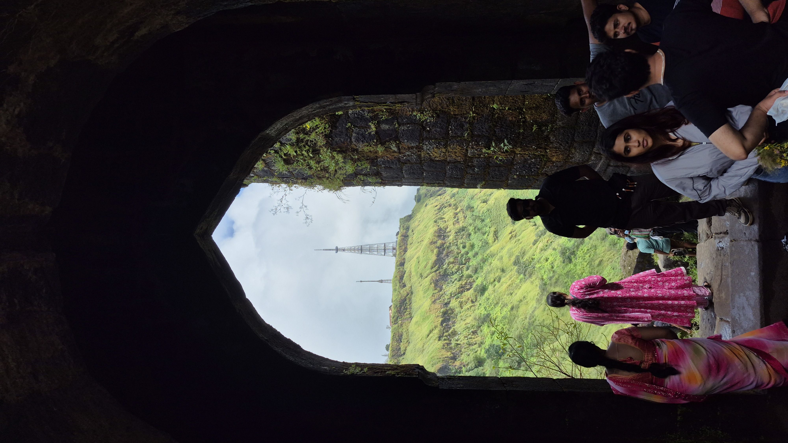

एका किल्ल्यापुरती मर्यादित न राहता, इतिहासाच्या साखळीने जोडलेले अनेक गड-किल्ले, घाटवाटा व तीर्थक्षेत्रे एकाच भ्रमंतीत अनुभवण्यासाठी तयार केलेले मार्ग — अंतर, कालावधी व अवघडपणा यासह.
स्वराज्याच्या संस्थापकांच्या जन्मभूमीपासून सुरू होणारा वारसा प्रवास — शिवजन्मस्थळ, जुन्नरमधील प्राचीन लेणी व बाजारपेठ, आणि पुण्यातील ऐतिहासिक वास्तूंपर्यंत.
| अंदाजे अंतर | ~९५ किमी |
| कालावधी | १ दिवस |
| अवघडपणा | सोपा |
स्वराज्याच्या स्थापनेपासून सिंहासनापर्यंतचा प्रवास — पहिला विजय, पहिली राजधानी आणि अंतिम राजधानी असा तीन टप्प्यांचा ऐतिहासिक धागा.
| अंदाजे अंतर | ~१६० किमी |
| कालावधी | ३-४ दिवस |
| अवघडपणा | कठीण |
अफझलखान वधाच्या रणभूमीपासून थंड हवेच्या ठिकाणापर्यंतचा निसर्गरम्य व ऐतिहासिक प्रवास — शौर्य आणि सह्याद्रीचे सौंदर्य एकत्र अनुभवणारा मार्ग.
| अंदाजे अंतर | ~२५ किमी |
| कालावधी | १ दिवस |
| अवघडपणा | मध्यम |
सिद्दी जौहरच्या वेढ्यातून सुटका आणि बाजीप्रभू देशपांडेंच्या अमर बलिदानाची संपूर्ण गाथा प्रत्यक्ष अनुभवणारा भावनिक व ऐतिहासिक मार्ग.
| अंदाजे अंतर | ~६५ किमी |
| कालावधी | १-२ दिवस |
| अवघडपणा | मध्यम |
मराठा आरमाराच्या सामर्थ्याची साक्ष देणारा कोकण किनारपट्टीवरील जलदुर्ग मार्ग — शिशाची जोडणी, गुप्त तटबंदी व आरमारी इतिहास.
| अंदाजे अंतर | ~२२० किमी |
| कालावधी | २-३ दिवस |
| अवघडपणा | सोपा (जलदुर्ग) |





बहु-किल्ले ट्रेल्ससाठी स्थानिक ट्रेक गाईड व वाहन व्यवस्था आधीच निश्चित करा.
सुरक्षित भ्रमंतीपावसाळ्यात निसरड्या वाटा टाळून हिवाळा व उन्हाळ्याच्या सुरुवातीचा कालावधी ट्रेकसाठी सर्वोत्तम.
हंगाम नियोजनपुरेसे पाणी, प्रथमोपचार पेटी, टॉर्च व ओळखपत्र सोबत ठेवणे अत्यावश्यक आहे.
तयारी